The Aesthetic
Leather / Chains / Fishnets
The Shark of Wall Street · Dossier
Morgan "Vex" Callaway — Heiress, Architect, & Frontwoman
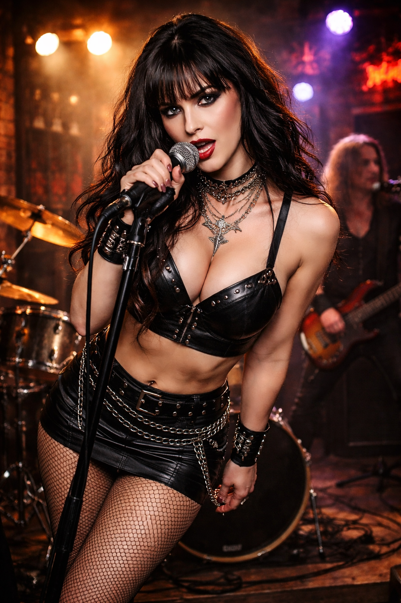
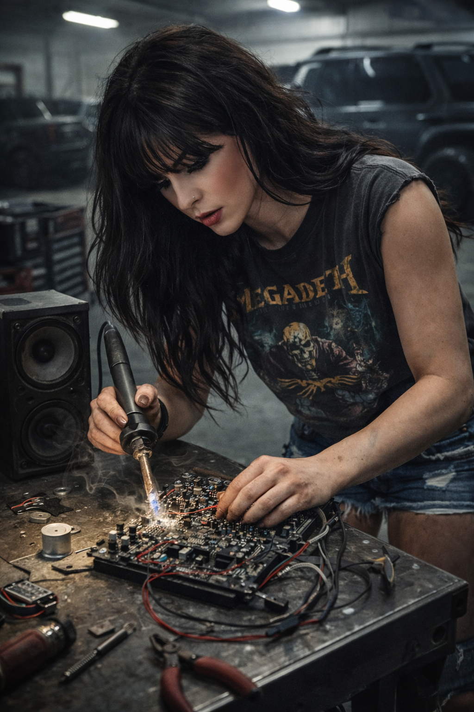
It was 104 degrees in the Permian Basin, and the air smelled heavily of sulfur, dust, and raw crude. Inside the compound’s massive, air-conditioned luxury garage, twenty-one-year-old Morgan wasn't looking at the fleet of matte-black armored SUVs. She was hunched over a steel workbench, wearing a grease-stained vintage rock tee and ripped denim. A heavy soldering iron was in her hand, the tip smoking as she fused a complex, over-volted audio routing board she had designed from scratch. Heavy industrial metal music was blasting from a pair of blown-out speakers.
The heavy steel door of the garage opened. The music was abruptly, remotely cut off. Morgan didn't flinch. She kept her hand perfectly steady, finishing the solder joint before slowly taking off her protective goggles.
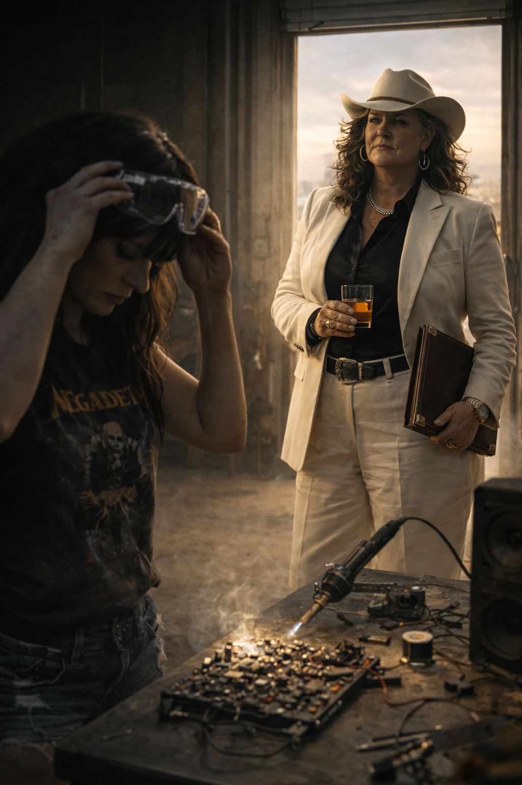
Maxine Callaway—The Tycoon—stood in the doorway. She was wearing an immaculate, bone-white Tom Ford suit, untouched by the Texas heat. She held a glass of neat Kentucky bourbon in one hand and a heavy, brass-cornered leather portfolio in the other.
"You're burning the flux, Morgan," Maxine said, her voice a slow, commanding Texas drawl. "And you're wasting your time."
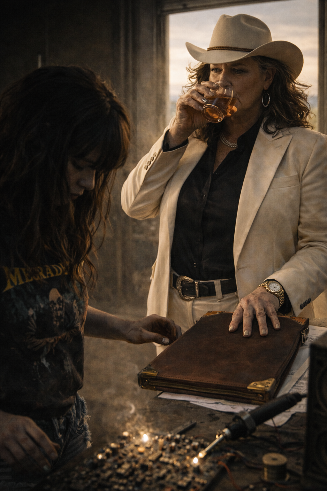
Morgan set the soldering iron in its cradle. "It’s a decentralized audio relay, Mother. It bypasses standard FCC broadcasting limits. I'm not burning anything except the safety limiters."
Maxine took a slow sip of her bourbon, her ice-cold eyes sweeping over her daughter’s messy raven hair and grease-stained hands. She walked to the workbench and dropped the heavy leather portfolio right on top of Morgan’s blueprints.
"Today is your twenty-first birthday," Maxine stated, her tone entirely devoid of maternal warmth. It was a business transaction. "Inside that folder is the deed and complete operational control of the Odessa South Refinery. It processes forty thousand barrels of sweet crude a day. It’s worth fifty million dollars."
Morgan stared at the leather folder. She didn't open it.
"Tomorrow, you will wash the grease out of your hair," Maxine continued, her voice hardening into steel. "You will put on a suit. You will sit at the head of the boardroom table in Houston, and you will learn how to crush our competitors. You are a Callaway. It is time you stopped playing with toys and started running the board."
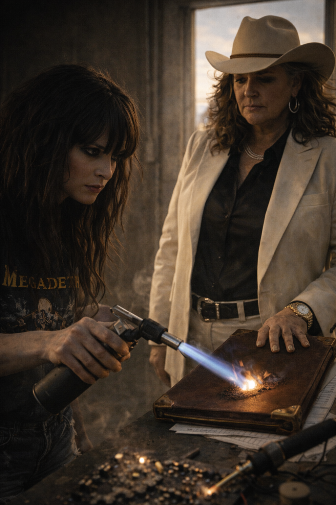
The silence in the garage was deafening, broken only by the distant, rhythmic thumping of the oil pump jacks out in the desert. Morgan looked at the fifty-million-dollar portfolio. Then she looked up at her mother. The resemblance was terrifying—they had the exact same sharp, predatory eyes. But where Maxine’s eyes were cold and calculating, Morgan’s were burning with absolute, unyielding fire.
"I don't want your oil, Mother," Morgan whispered, her voice practically vibrating with venom. "And I don't want your name."
Maxine’s expression didn't change, but her grip tightened slightly on her bourbon glass. "Don't be a child, Morgan. I built an empire so you could rule the world. You are going to take the refinery."
"No," Morgan said.
She reached across the workbench. She didn't grab a pen to sign the deed. She grabbed her heavy, industrial butane blowtorch. With a sharp click, a six-inch jet of blue flame erupted from the nozzle. Without breaking eye contact with her mother, Morgan pressed the blue flame directly into the center of the leather portfolio.
Maxine stood perfectly still as the fifty-million-dollar deed caught fire, the flames quickly consuming the leather and the legal documents inside. The black smoke curled up toward the garage ceiling, setting off a quiet, pulsing alarm.
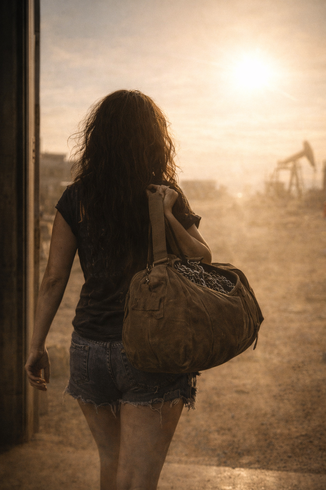
"You're a fool," Maxine said softly, watching the ashes drift onto the concrete floor. "If you walk out that door, you get nothing. No money. No protection. No legacy. You will be a ghost."
Morgan killed the blowtorch and tossed it onto the workbench. She grabbed a single, scuffed canvas duffel bag packed with her custom circuit boards, a few clothes, and her heavy chains. She slung it over her shoulder.
"I'd rather be a ghost than your puppet," Morgan said, her voice dead calm. She walked past the burning millions, stopping just inches from her mother. "You drill into the earth to see what you can take from it. I’m going to build a frequency that tears it all down."
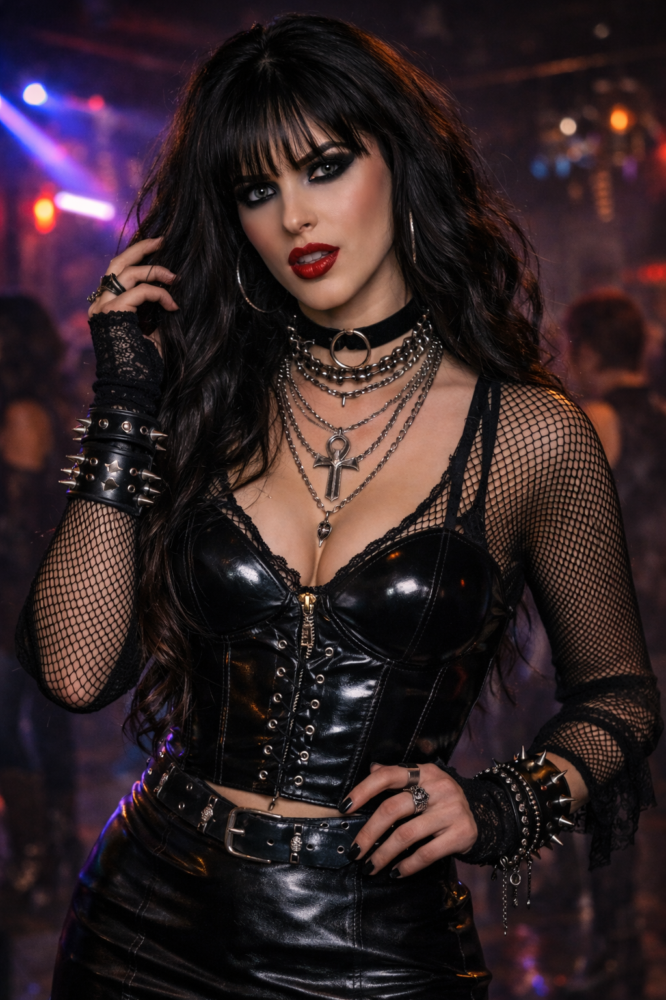
Morgan didn't look back. She walked out of the air-conditioned garage and straight into the blinding 104-degree Texas sun. But she didn't kill the name Morgan Callaway. She weaponized it. She kept her mother's billionaire legacy as a massive, defiant flex, dragging it straight through the underground. But to the streets of New York, she was simply known as Vex.
When Morgan arrived in New York, she didn't just stumble into her dark aesthetic; it was a carefully calculated rebellion. Rejecting the pristine, bone-white Tom Ford suits of her mother's high-society world, Vex built a wardrobe that was equal parts high-end fashion and underground armor.
She knew the power of bespoke tailoring, and she used it to craft an aesthetic that was undeniably, heart-stoppingly gorgeous, yet completely unapproachable. Her signature look—a plunging, studded black leather bralette paired with a custom-tailored leather blazer and skin-tight leather shorts—wasn't bought off a rack. It was crafted by underground designers in London and New York. She layered herself in heavy, oxidized silver: gothic crosses, daggers, and studded choker motifs that rested heavily against her chest, forged by artisan jewelers in Soho.
Her flawless pale skin and striking, blood-red lip contrasted sharply with the smoky, predatory darkness of her eyes and her heavy raven bangs. She understood exactly how her jaw-dropping sex appeal commanded a room, often blowing a bubble of pink gum with arrogant indifference to show the billionaires staring at her that she couldn't care less about their money.
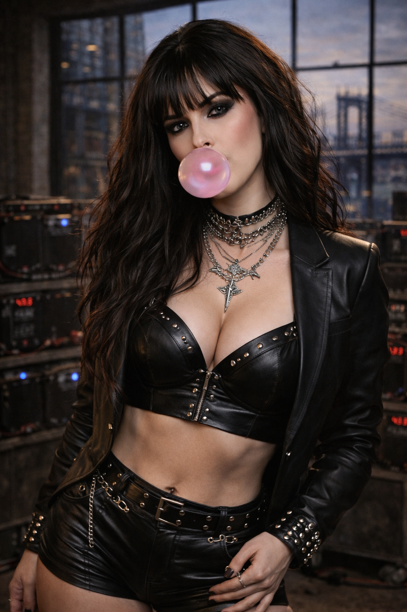
And when she truly needed to command the Swarm—when she stepped in front of the camera to execute a pirate broadcast that would crash a hedge fund—she elevated her look to a dark, cinematic royalty. Donning an intricate, heavy silver crown woven with skulls, draped in a black lace veil, she became the undisputed Queen of the retail insurgency. Every inch of her was designed to mesmerize and intimidate.
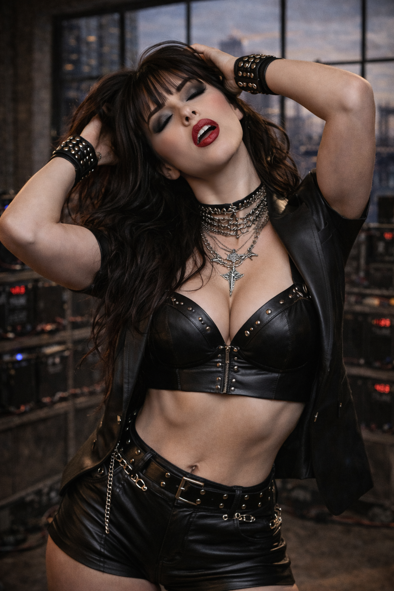
New York was loud, dirty, and perfectly anonymous. Vex spent her days in the back room of a Brooklyn pawn shop, repairing stolen laptops. But by night, she became the undisputed Queen of the Lower East Side underground.
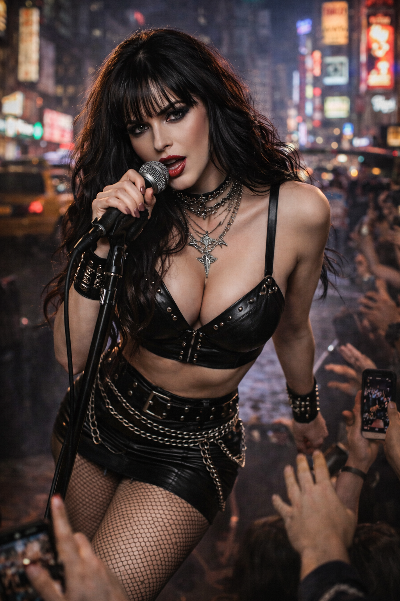
Physically, Morgan was a weaponized manifestation of goth-rock chic. Wild, voluminous raven hair with heavy bangs framed a face that was equal parts angelic and lethal. Her eyes, ringed in heavy, smoky dark eyeliner, were sharp and predatory, contrasting perfectly with a bold, blood-red lip. She commanded the stage in her signature aesthetic: a plunging, studded black leather bralette and a tight leather mini skirt wrapped in heavy silver chains and a thick double-buckle belt. Fishnet tights clung to her legs, while layered silver necklaces featuring gothic crosses and daggers rested heavily against her chest. With thick, studded leather cuffs wrapping her wrists, she gripped the microphone, leaning into the crowd with an effortless, hypnotic swagger. She was drop-dead gorgeous, radiating a raw, heavy-metal sex appeal that warned you to look, but never touch.
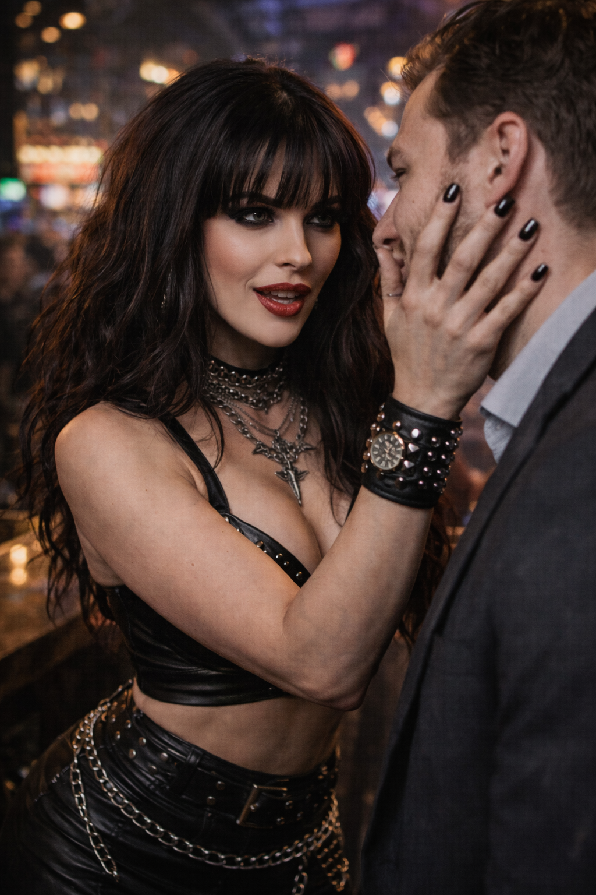
When an arrogant crypto-bro from Midtown slid up to the bar after a set, offering to buy her a drink and bragging about his decentralized fund, Morgan didn't swoon. She stepped flawlessly into his space, her black-painted nails resting dangerously close to his throat. In a low, breathy rasp, she completely dismantled him. She correctly deduced he was over-leveraged on Ethereum, wearing a fake Hublot watch to mask his margin call, and running on Adderall and panic.
"I don't just make noise, darling," Morgan smirked, patting his cheek with absolute, mocking pity. "I build the hardware that burns guys like you to the ground." She left him completely emasculated at the bar. She was a fortress of intellect and fire, completely untouchable by anyone who didn't vibrate at her exact, chaotic frequency.
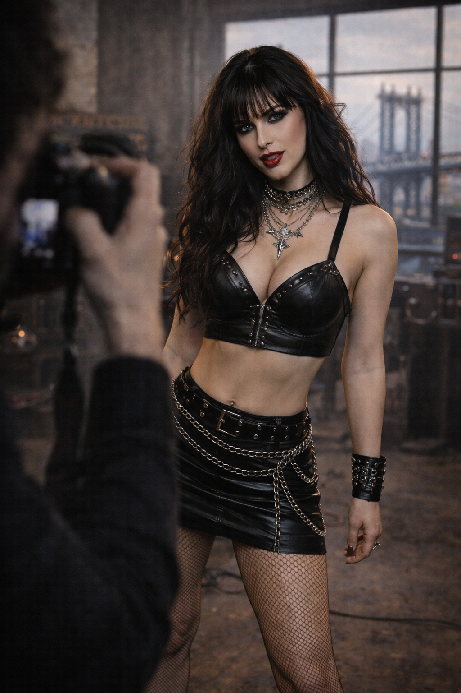
Morgan wasn't just the face of the band; she was the engine of a revolution. She built the infrastructure herself.
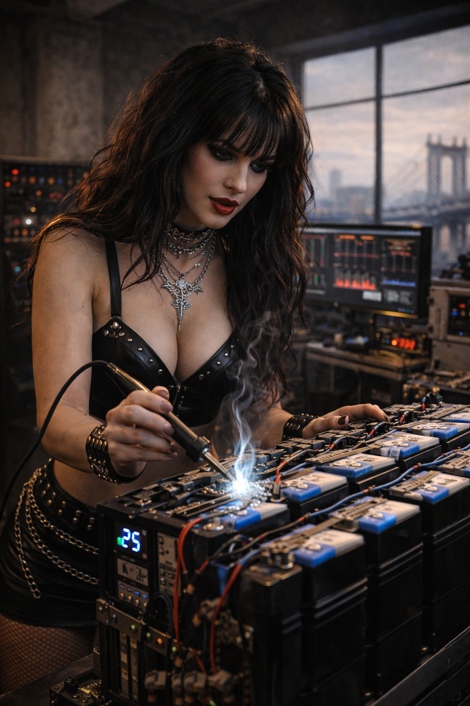
She designed massive, custom-built lithium-ion battery arrays to power pirate broadcasts from their brutalist Brooklyn loft. She soldered algorithmic API triggers into their audio equipment, turning every heavy metal riff into a synchronized market attack. When they went live to ten million internet degenerates, she was the one staring down the lens of the camera.
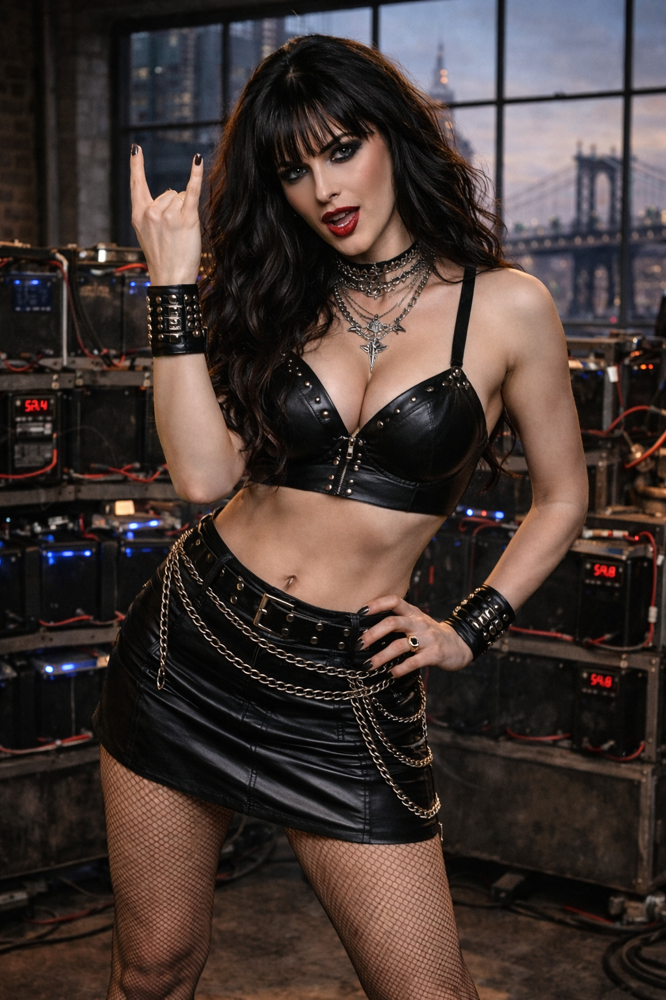
The Vex Toolkit